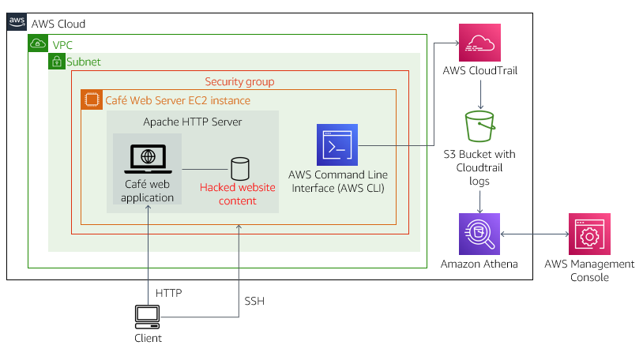
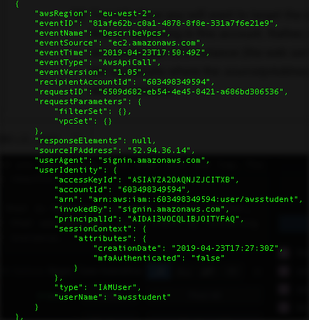

In this activity, you create an AWS CloudTrail trail that audits actions taken in your account. You then investigate to determine who modified the Café website.
The activity starts with an Amazon Elastic Compute Cloud (Amazon EC2) instance named Café Web Server, which runs a web application that hosts the Café website.
In Task 1, you observe that the website looks normal.
In Task 2, soon after you create a trail with CloudTrail, you notice that the website has been hacked and that part of the hack involved an action during which someone modified the security group settings.
In Task 3, you use a variety of methods to analyze the CloudTrail logs, including the Linux grep utility and the AWS Command Line Interface (AWS CLI).
In Task 4, you use Amazon Athena to search the CloudTrail logs.
In Task 5, now that you have discovered the culprit, you remove that user's access. You also take steps to reduce the chances that the AWS account and the Café website will be hacked again.
The architectural diagram illustrates the setup that this activity uses.

Duration
This lab requires approximately 75 minutes to complete.
After completing this activity, you will be able to:
A new request from the Café leadership team
Martha and Frank are concerned because the website was hacked. They are relying on you to discover who did it and to make sure that it does not happen again.
Faythe, Frank, Martha, and others make frequent changes to the website, and sometimes those changes cause issues. Also, this morning, it looks like the website was hacked. Martha and Frank are asking Sofîa if there is a way to track what was changed and who made the changes.
Play the role of Sofîa, become a detective, and discover the culprit.
At the top of these instructions, select Start Lab to launch your lab.
A Start Lab panel opens displaying the lab status.
Wait until you see the message Lab status: ready, and then select the X to close the Start Lab panel.
At the top of these instructions, select AWS
This step opens the AWS Management Console in a new browser tab. The system automatically logs you in.
Tip: If a new browser tab does not open, a banner or icon at the top of your browser typically indicates that your browser is preventing the site from opening pop-up windows. Select the banner or icon, and choose Allow pop-ups.
Arrange the AWS Management Console tab so that it displays alongside these instructions. Ideally, you should be able to see both browser tabs at the same time to make it easier to follow the lab steps.
From the Services menu, choose Compute then the EC2 service.
Choose Instances, and then locate and select the Café Web Server (WebSecurityGroup) instance.
In the Security tab, choose the sg-xxxxxxxxxx security group.
In the Inbound rules tab, notice that only one inbound rule has been defined, which is for HTTP access over TCP port 80.
Choose Edit inbound rules, and then choose Add rule and configure the rule as follows:
22My IPImportant: Confirm that the TCP port 22 access will be open to only your IP address. The entry should show a Classless Inter-Domain Routing (CIDR) block that has a particular IP address followed by /32, not to all IP addresses (which would be shown by 0.0.0.0/0).
At the bottom of the page, choose Save rules.
Observe the Café website:
In this task, you create a CloudTrail trail in your AWS account. You also notice that soon after creating the trail, the Café website is hacked.
In the AWS Management Console, from the Services menu, select Management & Governance then CloudTrail. Ignore the AWSOrganizations access denied message at the top of the console.
On the navigation pane on the left, choose Trails.
If the navigation pane is not displayed, choose the three icon of the horizontal lines on the top left of the screen. If you encounter the following warning The option to create an organization trail is not available for this AWS account, you can ignore it.
Choose Create trail
Configure the trail as follows:
monitor
Important: Verify that you set the Trail name to monitor, or this activity will not work as intended.monitoring#### (the #### characters are four random digits).-KMS (for example, kc-KMS).Choose Next
On the Choose log events page, choose Next
On the Review and create page, choose Create trail
Verify that you see your trail on the Trails page.
Return to the browser tab where you have the Café website open, and refresh the page.
Important: You might need to wait a full minute before the hack will occur. Also, your browser may be caching the images on this website. Press and hold Shift while you also choose the browser refresh button in order to see the latest changes to the website.
Notice that the website has been hacked. Who put that image there? The image certainly does not look correct.
It is up to you to figure out who hacked the website.
It is good that you enabled CloudTrail before this happened. CloudTrail can give you valuable information about what users have been doing in your account.
In the AWS Management Console, browse to the EC2 service, and observe the Café Web Server instance details.
Does anything look suspicious?
In the Security tab, choose the sg-xxxxxxxxxx security group again, and then choose the Inbound rules tab.
Where did that extra entry come from?
You still see the entry you created earlier: the rule that opens port 22 to only your IP address. However, you also now see that someone else created an additional inbound rule that allows Secure Shell (SSH) access from anywhere (0.0.0.0/0).
Who added this security hole? You can search the CloudTrail logs to find out.
In this task, you analyze the CloudTrail logs by using the grep Linux utility to see if you can figure out who hacked the website.
In this task, you connect to the Café Web Server EC2 instance. You use SSH to connect to the instance.
Windows users should follow Task 3.2 for Windows. Both macOS and Linux users should follow Task 3.2 for macOS/Linux.
macOS/Linux users: visit this link for login instructions
These instructions are for Windows users only.
If you are using macOS or Linux, skip to the next section.
Read through the three bullet points in this step before you start to complete the actions because you will not be able see these instructions when the Details panel is open.
Choose the Details dropdown menu above these instructions, and then choose Show
A Credentials window will open.
Choose the Download PPK button, and save the labsuser.ppk file. Typically your browser save it to the Downloads directory.
To exit the Details panel, choose the X.
Download the needed software.
Open putty.exe.
Configure PuTTY to not timeout:
30This step allows you to keep the PuTTY session open for a longer period of time.
Configure your PuTTY session:
Choose Yes to trust the host and connect to it.
When prompted to login as, enter ec2-user
This step connects you to the EC2 instance.
Windows users can skip ahead to the next task.
These instructions are for Mac/Linux users only. If you are a Windows user, skip ahead to the next task.
Read through the three bullet points in this step before you start to complete the actions because you will not be able see these instructions when the Details panel is open.
Choose the Details dropdown menu above these instructions, and then choose Show
A Credentials window will open.
Chose the Download PEM button, and save the labsuser.pem file.
To exit the Details panel, choose the X.
Open a terminal window, and change the cd directory to the directory where the labsuser.pem file was downloaded.
For example, run the following command if the file was saved to your Downloads directory:
xxxxxxxxxxcd ~/DownloadsTo change the permissions on the key to be read only, run the following command:
xxxxxxxxxxchmod 400 labsuser.pemReturn to the AWS Management Console, and in the EC2 service, choose Instances. Select the check box next to the Café Web Server instance, and choose the Description tab.
Copy the IPv4 Public IP value.
Return to the terminal window, and run the following command (replace <public-ip> with the actual public IP address you copied):
xxxxxxxxxxssh -i labsuser.pem ec2-user@<public-ip>When prompted, type yes to allow a first connection to this remote SSH server.
Because you are using a key pair for authentication, you will not be prompted for a password.
Verify that your terminal is connected via SSH to the Café Web Server EC2 instance.
Run the following command to create a local directory on the web server to download the CloudTrail log files to:
xxxxxxxxxxmkdir ctraillogsRun the following command to change the directory to the new directory:
xxxxxxxxxxcd ctraillogsRun the following command to list the buckets to recall the bucket name:
xxxxxxxxxxaws s3 lsIn the command below, replace <monitoring####> with the actual bucket name that starts with monitoring (the bucket name is part of the output from the ls command that you ran). Run the adjusted command to download the CloudTrail logs:
xxxxxxxxxxaws s3 cp s3://<monitoring####>/ . --recursiveIf the command is successful, you should see that a few log files are downloaded.
Important: If there was no output in the command line when you ran the last command, it likely means that not enough time has passed since you created the CloudWatch trail. CloudWatch posts logs to Amazon Simple Storage Service (Amazon S3) every 5 minutes. You might need to wait and try running the command again. Do not proceed to the next step until you have downloaded at least one log file.
Use the cd and ls commands repeatedly (or enter cd and then press Tab multiple times) as necessary to change the directory to the subdirectory where the logs were downloaded. When you run ls, all of the downloaded log files should display. They will be located in an AWSLogs/<account-num>/CloudTrail/<Region>/<yyyy>/<mm>/<dd> subdirectory.
Notice that the log files end in json.gz, which indicates that they are compressed as GNU zip files.
Run the following command to extract the logs:
xxxxxxxxxxgunzip *.gzRun ls again. Notice that all files are now extracted.
In this section of the activity, you use the Linux grep utility to analyze the CloudTrail logs.
To analyze the structure of the logs, do the following:
ls command that you ran.cat in the terminal window, followed by a space, and then paste the copied file name. Run the command.cat command again, but this time format the output (replace <filename.json> with the actual file name):xxxxxxxxxxcat <filename.json> | python -m json.toolThis format is more readable. You can now also see the structure of the log entries. Notice that each entry contains the same standard fields, including awsRegion, eventName, eventSource, eventTime, requestParameters, sourceIPAddress, userIdentity, and more.
The graphic below shows an example log entry.

You can now read the log entries. However, the number of entries—even in just this one log file—can be large. You might have downloaded more than one log because new log files are created over time. You need to find a way to search log entries across multiple files and also filter the results.
Consider how you want to target the search. You are not interested in everything that is happening in this account. Instead, your interest is in an action that was taken on a particular EC2 instance (that is, the web server that was hacked).
Start by filtering the log results where the sourceIpAddress matches the IP address of the Café Web Server instance.
Run the following command to set the WebServerIP address as a variable that you can use in future commands (replace <WebServerIP> with the actual IP address that displays to the left of these instructions):
xxxxxxxxxxip=<WebServerIP>Run the following command:
xxxxxxxxxxfor i in $(ls); do echo $i && cat $i | python -m json.tool | grep sourceIPAddress ; doneThe command you ran does the following:
Note that there are several log entries in the trail where the sourceIPAddress was the Café Web Server instance.
Run a similarly structured command but where the command returns the eventName of every captured event:
xxxxxxxxxxfor i in $(ls); do echo $i && cat $i | python -m json.tool | grep eventName ; doneThe command you ran follows the same logic as the command you ran before, but this time, it filters log entries for the eventName.
The results of the previous command contain different details. Many describe and list actions were recorded, and they look relatively harmless. However, if you scroll through the list, you notice that occasional update actions were also recorded. You could use a text editor like vi to open a log that contains a recorded event that you want to know more about. You can then search for that eventName and look at the details.
However, you might benefit from using a different tool other than grep to locate these log entries more easily.
Another approach you can use to analyze CloudTrail logs is to use AWS CLI CloudTrail commands.
Open the AWS CLI Reference page for CloudTrail.
Choose the lookup-events command to see details about the command.
xxxxxxxxxxaws cloudtrail lookup-events --lookup-attributes AttributeKey=EventName,AttributeValue=ConsoleLoginThe results indicate there have been no console login events or that the only user who has logged into the console is the same user that you are logged into the console as
However, there are other ways to modify resources on AWS instead of using the console. The hacker might have used a different approach.
Run the following command to find any actions that were taken on security groups in the AWS account:
xxxxxxxxxxaws cloudtrail lookup-events --lookup-attributes AttributeKey=ResourceType,AttributeValue=AWS::EC2::SecurityGroup --output textSomething in this result set might contain some information that would help you discover what happened, but there might be too many results for you to easily identify the issue.
Perhaps you can narrow the search results further so that you get only the results related to the security group that is used by the web server instance.
Run the following commands to find the security group ID that is used by the Café Web Server instance, and then echo the result to the terminal:
xxxxxxxxxxregion=$(curl http://169.254.169.254/latest/dynamic/instance-identity/document|grep region | cut -d '"' -f4)sgId=$(aws ec2 describe-instances --filters "Name=tag:Name,Values='Cafe Web Server'" --query 'Reservations[*].Instances[*].SecurityGroups[*].[GroupId]' --region $region --output text)echo $sgIdNotice that a single security group ID was found.
Now use the security group ID that the previous command returned to further filter your AWS CLI CloudTrail command results:
xxxxxxxxxxaws cloudtrail lookup-events --lookup-attributes AttributeKey=ResourceType,AttributeValue=AWS::EC2::SecurityGroup --region $region --output text | grep $sgIdYou could keep experimenting with different commands to filter the log results. However, you might wonder whether there is a better tool or solution for reading these logs. AWS has the AWS Partner Network (APN), where companies specialize in helping AWS customers with this challenge. See https://aws.amazon.com/cloudtrail/partners/ for a listing of APN Partner solutions.
The APN Partner solutions suit the needs of many AWS customers. However, for the purposes of this activity, there is one additional approach to examining CloudTrail log files that you might use, and it uses another AWS service. In the next task, you explore CloudTrail logs by using Athena.
As you experienced in the previous task, it can be difficult to find specific information within a very large dataset. CloudTrail logs are verbose for a reason: you might want to know every relevant detail about a particular action that was taken in your AWS account. However, using command line tools to filter the logs can be tedious.
It would be convenient if all the log data were in a database and you could use structured query language (SQL) queries to search for the log entries that you are most interested in. Athena provides such a solution. Athena is an interactive query service that makes it easy to analyze data in Amazon S3 by using standard SQL.
In this task, you use Athena to analyze your CloudTrail logs.
From the AWS Management Console Services menu, choose CloudTrail to open the CloudTrail console.
In the navigation pane, choose Event history.
Notice that CloudTrail provides this event history interface where you can apply filters and conduct a basic search based on parameters, such as Event name or Resource type. The Event history page can be a useful tool, and you are free to explore it. However, in this activity, you use Athena.
From the Event history page, click Create Athena table
Take a moment to analyze how the Athena CREATE TABLE statement is formed.
After you are done analyzing the CREATE TABLE details, choose Create table.
The table is created with a default name that includes the name of the S3 bucket.
From the Services menu, choose Analytics then the Athena service.
The advantage of using Athena is that you can now run SQL queries over your log data.
If you do not already see the Athena Query Editor, choose Explore query editor and it should then display.
If a Tutorial screen appears, choose the X in the top corner to exit out of it.
In the left panel of the Athena Query Editor, you should see the cloudtrail_logs_monitoring#### table.
Select + beside the table to reveal the column names.
Analysis: Notice how each standard child element that exists in a CloudTrail log record in JSON format has a corresponding column name in this database. The useridentity database column is a struct type, because it contains more than a single name-value pair. Similarly, the resources database column is an array.
Start by setting up a query results location and then running a simple query to get an idea of the data that is available in the logs.
On the menu bar at the upper right of the page, choose Settings followed by Manage.
Set Location of query result to s3://monitoring####/results/ and replace monitoring#### with the name of the bucket you created earlier.
Choose Save.
Select the Editor table and paste the following SQL query into the Query 1 panel. Replace #### with the numbers in your actual table, and choose Run.
xxxxxxxxxxSELECT *FROM cloudtrail_logs_monitoring####LIMIT 5This query returns five rows of data. Look at the result set (scroll to the right in the Results panel to see additional column data).
Focus on the columns useridentity, eventtime, eventsource, eventname, and requestparameters, which contain the most valuable information to help you find the origin of the hack.
The useridentity column has many details that make it more difficult to read though. You now return only the user name for that column.
Run a new query that selects only those columns that were previously mentioned. This time, limit the results to 30 rows:
xxxxxxxxxxSELECT useridentity.userName, eventtime, eventsource, eventname, requestparametersFROM cloudtrail_logs_monitoring####LIMIT 30You should now be able to find out who modified the security group that is associated with the Café Web Server instance.
In this section of the activity, you try to discover the log entry that includes the essential information about who hacked the website. Specific steps are not provided. Instead, you must experiment with running different queries until you find the information that you are looking for.
Tips:
Tip 1: Look at the data that was returned by the last command that you ran. Even if none of the log entry details that display are the log entry you are looking for, they still give you an indication of what kinds of data the different columns contain. Don't be afraid to experiment with running modified SQL queries. ChooseA the + icon next to New query 1 to create a second query tab. This way, you can preserve older queries without deleting them.
Tip 2: Try filtering by events that are related to the Amazon EC2 service. Remember that you can add WHERE clauses, such as WHERE eventsource = 'ec2.amazonaws.com'
Tip 3: To ensure you are querying the entire log set, remove the LIMIT clause from your query.
Tip 4: Take a look at the kind of data that is captured in the eventname column. Can you further refine your SQL query so that it looks for only events that contain the word Security? Remember that SQL allows you to use compound WHERE clauses that look for pattern matches (for example, WHERE columnName = 'some value' AND otherColumnName LIKE '%part of some value%').
Tip 5: After you have successfully filtered all security-related actions in the log, analyze the eventnames further. Do any of them look suspicious? Can you adjust the WHERE clause to search for a particular *eventname?
Tip 6: If you are still looking for the entry that shows who opened port 22 to the world, here is a general query that is often useful to run. This query might help identify the action:
xxxxxxxxxxSELECT DISTINCT useridentity.userName, eventName, eventSource FROM cloudtrail_logs_monitoring#### WHERE from_iso8601_timestamp(eventtime) > date_add('day', -1, now()) ORDER BY eventSource;This query returns a list of all users who were active in the account in the past day and the distinct actions they have taken.
You have successfully completed the challenge if you can identify the following information:
Congratulations! You have successfully uncovered the identity of the hacker!
In this last task, you work to secure both your AWS account and the web server instance.
In the terminal where you have an active SSH session to the web server instance, run the following command to find out who has recently logged into this operating system (OS):
xxxxxxxxxxsudo aureport --authThere is evidence that a user other than ec2-user has logged in. Who is that chaos-user?
Run the who command to figure out who is currently logged in:
xxxxxxxxxxwhoThe user is still logged in! Get them off this instance right away!
Run the following command to try to remove the chaos-user OS user:
xxxxxxxxxxsudo userdel -r chaos-userThat didn't work because they are still logged in. However, it did return the process number they are connected as.
In the command below, replace ProcNum with the process number returned by the last command. Run the adjusted command to stop the process that has the active chaos-user login session:
xxxxxxxxxxsudo kill -9 ProcNumRun the who command again to verify that the chaos-user OS user is no longer connected:
xxxxxxxxxxwhoNow you (the ec2-user) should be the only user connected.
Run the following command to try to delete the chaos-user again:
xxxxxxxxxxsudo userdel -r chaos-userIt should succeed this time.
Run the following command to verify no other suspicious OS users who can login:
xxxxxxxxxxsudo cat /etc/passwd | grep -v nologinNote that the grep part of the command you just ran filtered out the OS users who do not have a login.
The root, sync, shutdown, and halt users are all standard OS users in Amazon Linux, so there are no other concerning user logins on this instance.
Analyze SSH settings on the instance.
You have removed the OS user who hacked into the instance, but how did they manage to connect to the EC2 instance by using SSH in the first place?
You have been careful about who has access to the key pair file. However, maybe you should check the SSH settings on this instance.
xxxxxxxxxxsudo ls -l /etc/ssh/sshd_configNotice the last modified timestamp for the file. This file was modified today! That is concerning.
Run the following command to edit the SSH configuration file in the VI editor:
xxxxxxxxxxsudo vi /etc/ssh/sshd_config:set number to see the line numbers in this file.Tip: Enter a on your keyboard to enter edit mode in VI, and add a # character at the start of the line.
:wq command.Run the following command to restart the SSH service so that the changes go into effect:
xxxxxxxxxxsudo service sshd restartNote: If running the command above interrupts your SSH connection, reestablish the SSH connection before continuing on to the next step.
Finally, in the EC2 console, return to the Web Server security group settings.
With the Web Server security group selected, go to the Inbound tab, and choose Edit.
Delete the inbound rule that allows port 22 access from 0.0.0.0/0 (the one the hacker created).
Save the change.
Nice work! You have kicked the hacker out of this instance and remove the login account that they used. You also updated the SSH settings so that only users who have the correct key pair and the same source IP address as you can connect to it.
Now that the hacker no longer has access to this instance, you can fix the issue with the website.
Run the following command to navigate to the directory where the website image files are held and review the contents:
xxxxxxxxxxcd /var/www/html/cafe/images/ls -lIt looks like the hacker created a backup of the original file.
Run the following command to restore the original graphic on the website.
xxxxxxxxxxsudo mv Coffee-and-Pastries.backup Coffee-and-Pastries.jpgTo test the fix, reload the http://WebServerIP/cafe website in the browser.
Tip: You may need to press and hold the Shift key and choose the browser refresh button to see the change.
That looks better!
Recall that the hacker not only accessed the EC2 instance hosting the website but also managed to run an AWS CLI command that opened port 22 in the security group to the entire internet. In this step, you remove the chaos AWS Identity and Access Management (IAM) user from the account.
In the AWS Management Console, choose the Services menu, and choose IAM.
Choose the Users link, and select the check box next to the chaos user.
Choose Delete, enter the users name and select Delete.
Nice work! That chaos user shouldn't be causing any trouble in the AWS account anymore.
Update from Café
Everyone at the Café is relieved that Sofîa was able to uncover the identity of the person who committed the hack and remove their access to the web server and to the AWS account.
In the end, the team members were lucky that it looks like the hacker was just trying to have fun. However, they all know that the hacker could have caused serious damage. Everyone on the team at the Café who participates in updating and maintaining the website now knows how important it is to keep the site secure. They are also definitely going to continue to use CloudTrail as a key tool for auditing activity on their AWS account.
Congratulations! You have completed the lab.
Choose End Lab at the top of this page, and then choose Yes to confirm that you want to end the lab.
A panel appears indicating that DELETE has been initiated... You may close this message box now.
Choose the X in the top-right corner to close the panel.
For more information about AWS Training and Certification, see https://aws.amazon.com/training/.
Your feedback is welcome and appreciated.
If you would like to share any suggestions or corrections, please provide the details in our AWS Training and Certification Contact Form.
© 2022 Amazon Web Services, Inc. and its affiliates. All rights reserved. This work may not be reproduced or redistributed, in whole or in part, without prior written permission from Amazon Web Services, Inc. Commercial copying, lending, or selling is prohibited.